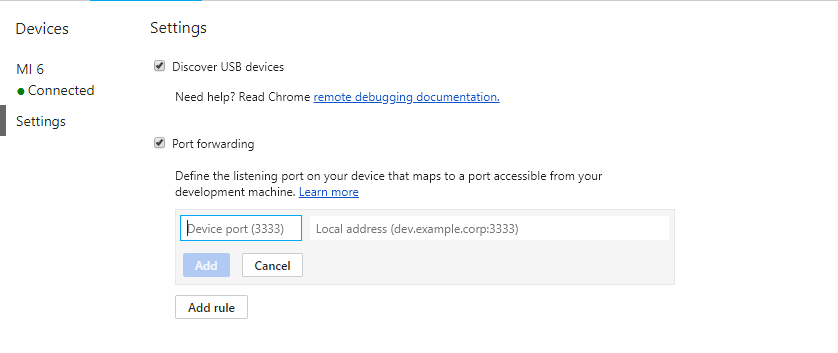

device mode
使用devide mode可以方便的模拟多种设备及功能
- 模拟不同的屏幕尺寸和分辨率
- 通过可视化和检查 CSS 媒体查询进行自适应设计
- 使用网络模拟器在不影响其他标签流量的情况下模拟您网站的性能
- 针对触摸事件、地理定位和设备方向准确模拟设备输入
设置视口参数
自适应模式
自定义视口大小，可以拖动窗口右下角的箭头，或者在菜单栏中输入相应的值
特定设备模式
以预制设备大小可选择，也可设置自定义设备
设置其他参数
移动设备模式下屏幕右上角可选
device type：选择user agent类型 更改此设置会影响移动设备视口和触摸事件模拟并更改 UA 字符串。 因此，如果您想要为桌面设备创建自适应网站，且想要测试悬停效果，请在 Responsive 模式下切换到“Desktop”
设备像素比DPR：用于模拟Retina屏幕
- media query：显示媒体查询标尺，左键点击媒体查询条形，调整视口大小和预览适合目标屏幕大小的样式，右键点击选择可以查看相应代码
- rulers：基于像素的标尺
- 网络配置
模拟传感器
Chrome DevTools 的 more tools -> Sensors 模拟窗格可以模拟常见的移动设备传感器，包括地理定位与加速度计（模拟设备方向）
地理定位
其中geolocation项可以用于设置地理定位数值，替换navigator.geolocation的位置值，达到模拟效果
加速度计
通过加速度计可以模拟设备方向，通过orientation项进行设置
限制
device mode存在一些限制，主要在于以下几个方面
- 设备硬件
- 浏览器UI
- 浏览器功能
- Appcache
远程调试安卓设备
此处需要使用Google提供的特定服务，故需要翻墙，采用host翻墙的方法，访问指定服务
172.217.21.20 chrome-devtools-frontend.appspot.com
连接安卓设备
- 设置安卓设备允许USB调试
- 此处有两种方法
- 访问
chrome://inspect/?tracing#devices页面显示您的设备上已启用调试的 WebView 列表 - 在devtools的more tools -> Remote devices 中，选择discover USB devices，查看连接的设备
- 访问
安卓设备设置端口转发
端口转发Port forwarding可以使安卓设备通过自身特定端口访问在开发计算机上部署的内容。如通过设置可以使得手机使用自身的8080端口通过USB数据线访问与之相连计算机的localhost:5000地址
端口转发通过在映射到开发计算机上 TCP 端口的 Android 设备上创建侦听 TCP 端口的方式工作。端口之间的流量通过 Android 设备与开发计算机之间的 USB 连接传输，所以连接并不取决于您的网络配置。
端口转发配置如下图所示，左侧为设备端口号，右侧为目标网站的IP或主机名，后面紧跟端口号

此部分起到反向代理的作用
完整的转发设置
完整的转发设置包括正向代理 + 反向代理，反向代理设置如上述，正向代理设置需要开发人员在WiFi的设置项中设置转发规则，地址为localhost，端口号为上述设置的devicePort，之后才可以将设置的所有请求由特定端口号转发到目标计算机上